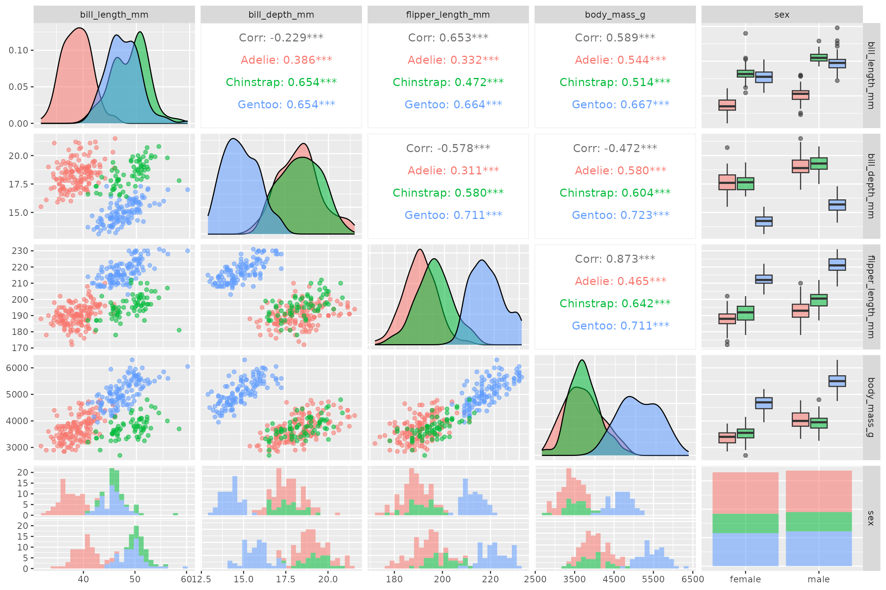
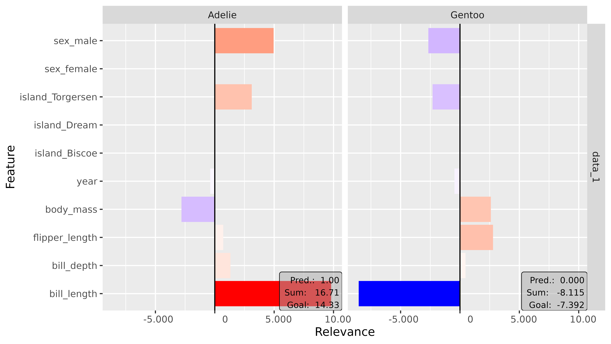
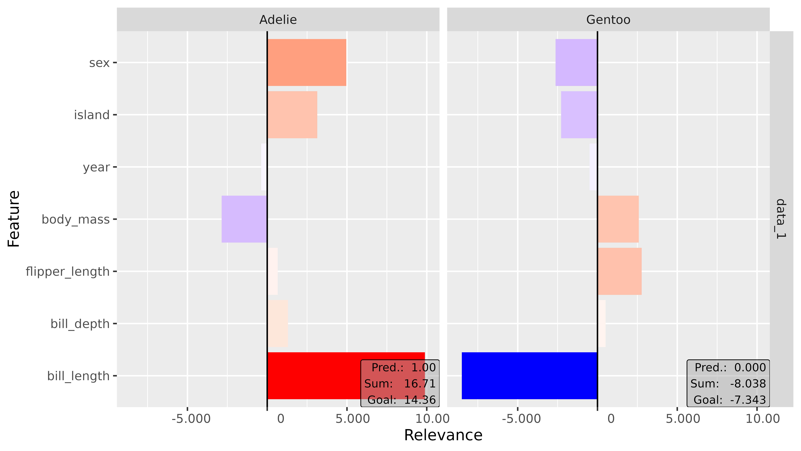
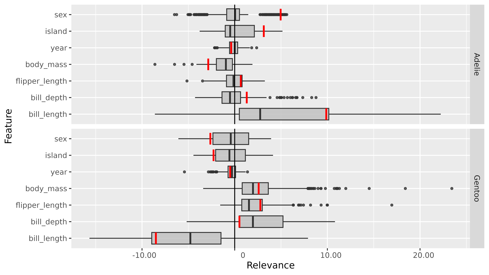

vignettes/Example_2_penguin.Rmd
Example_2_penguin.Rmd📝 Note
Since the innsight package relies on the torch package for each method and requires a successful installation of LibTorch and other dependencies (torch::install_torch()), no examples can be run in the R vignette for memory reasons. For the executed code chunks, we refer to our website.
This example is even slightly more complex than the first one, considering the Iris dataset, because we are using the penguin dataset, which has both numeric and categorical variables. Since our package innsight currently only accepts numeric values as inputs, you have to keep a few points in mind and use little tricks. But in the future, it should be possible to use categorical variables directly with the package. In addition, we want to show how to use torch models trained with the higher level API luz in this example.
The dataset includes measurements of penguin species Adelie (\(162\)), Chinstrap (\(68\)), and Gentoo (\(124\)) collected near Palmer Station, Antarctica. For each of the \(344\) penguins, numerical values of bill length/depth, flipper length, body mass, and study year were measured, and additional categorical characteristics like sex and island were recorded. To give you a brief overview of the data, let’s create a pair plot of some variables using GGally:
library(palmerpenguins)
# remove NAs
penguin_data <- na.omit(penguins)
# create plot
GGally::ggpairs(penguin_data,
ggplot2::aes(color = species, alpha = 0.75),
columns = 3:7,
progress = FALSE
)
Based on this graphic, we can already hypothesize which characteristics might be relevant for the individual classes. For example, it is visible that the Gentoo species (blue) is much heavier, has longer flippers and thinner bills than the other species. On the other hand, for the species Adelie (red), the bill length could be a decisive feature for the classification. In the following, we will see if these hypotheses match the results of the feature attribution methods.
The package luz makes things much easier for
training a torch model, e.g., by doing the for-loop
over the epochs for you. However, the model must be defined as nn_module
and the data as a torch::dataset,
but currently, innsight only works with
torch models of class nn_sequential.
Therefore a data preparation step and a few tricks are necessary to use
sequential models trained in luz with the package
innsight.
As previously mentioned, innsight needs numeric
input, and luz needs a torch dataset.
For this reason, we create a dataset with already encoded categorical
variables (for more information about the dataset defined
for torch models see the torch
vignette).
# Load packages
library(torch)
library(luz)
# Create torch penguin dataset
penguin_dataset <- dataset(
name = "penguin_dataset",
initialize = function(df) {
df <- na.omit(df) # remove NAs
# Get all numeric features and transform them to `torch_tensor`
x_cont <- df[, c(
"bill_length_mm", "bill_depth_mm", "flipper_length_mm",
"body_mass_g", "year"
)]
x_cont <- torch_tensor(as.matrix(x_cont))
# Get and encode (one-hot) categorical features and transform them to `torch_tensor`
x_cat <- sapply(df[, c("island", "sex")], as.integer)
x_cat <- torch_tensor(x_cat, dtype = torch_int64())
x_cat <- torch_hstack(list(
nnf_one_hot(x_cat[, 1]),
nnf_one_hot(x_cat[, 2])
))
# Stack and store all features together in the field 'x'
self$x <- torch_hstack(list(x_cont, x_cat))
# Get, transform and store the target variable (the three penguin species)
self$y <- torch_tensor(as.integer(df$species))
},
.getitem = function(i) {
list(x = self$x[i, ], y = self$y[i])
},
.length = function() {
self$y$size()[[1]]
}
)Using the above method, we can now create a torch
dataset from any subset of instances from the penguin dataset.
Consequently, we can now get a training and validation dataset and build
a data loader provided by the function torch::dataloader.
Beforehand, however, we normalize all numerical inputs:
# Normalize inputs
scaled_penguin_ds <- penguin_data
scaled_penguin_ds[, c(3:6, 8)] <- scale(penguin_data[, c(3:6, 8)])
# Create train and validation split
idx <- sample(seq_len(nrow(penguin_data)))
train_idx <- idx[1:250]
valid_idx <- idx[251:333]
# Create train and validation datasets
train_ds <- penguin_dataset(scaled_penguin_ds[train_idx, ])
valid_ds <- penguin_dataset(scaled_penguin_ds[valid_idx, ])
# Create dataloaders
train_dl <- dataloader(train_ds, batch_size = 32, shuffle = TRUE)
valid_dl <- dataloader(valid_ds, batch_size = 32, shuffle = FALSE)
# We use the whole dataset as the test data
test_ds <- penguin_dataset(scaled_penguin_ds)The package luz requires an object of the class
nn_module, which cannot be used for
innsight. But a sequential model can be nested in a
nn_module and extracted afterward. For this reason, we
define a model that uses only the sequential network of class
nn_sequential stored as a field. In the same way, you can
assemble a model from several sequential models and, if necessary, apply
each model individually with innsight. For example, if
you want to use several data pre-processing layers before the actual
model.
# Create the model
net <- nn_module(
initialize = function(dim_in) {
# Here, we define our sequential model
self$seq_model <- nn_sequential(
nn_linear(dim_in, 256),
nn_relu(),
nn_dropout(p = 0.4),
nn_linear(256, 256),
nn_relu(),
nn_dropout(p = 0.4),
nn_linear(256, 64),
nn_relu(),
nn_dropout(p = 0.4),
nn_linear(64, 3),
nn_softmax(dim = 2)
)
},
# The forward pass should only contain the call of the sequential model
forward = function(x) {
self$seq_model(x)
}
)Now we can easily train the model with luz and extract the sequential model to be used for innsight:
# We have imbalanced classes, so we weight the output classes accordingly
weight <- length(train_ds$y) /
(3 * torch_stack(lapply(1:3, function(i) sum(train_ds$y == i))))
# Fit the model
fitted <- net %>%
setup(
loss =
function(input, target) nnf_nll_loss(log(input), target, weight = weight),
optimizer = optim_adam,
metrics = list(
luz_metric_accuracy()
)
) %>%
set_hparams(dim_in = 10) %>%
fit(train_dl, epochs = 50, valid_data = valid_dl)
# Extract the sequential model
model <- fitted$model$seq_model
# Show result
get_metrics(fitted)[c(99, 100, 199, 200), ]
#> set metric epoch value
#> 99 train loss 50 0.007749624
#> 100 train acc 50 0.996000000
#> 199 valid loss 50 0.016769218
#> 200 valid acc 50 0.987951807Analogous to the first
example considering the Iris dataset, we can easily create the
Converter object by passing the extracted model and the
input dimension to the R6 class. However, since the categorical
variables have already been encoded, there are a total of \(10\) inputs (\(5\) numeric features, \(3\) islands and \(2\) genders) and the input names (optional
argument) must be expanded accordingly.
library(innsight)
# Define input and output names
input_names <-
c(
"bill_length", "bill_depth", "flipper_length", "body_mass", "year",
"island_Biscoe", "island_Dream", "island_Torgersen",
"sex_female", "sex_male"
)
output_names <- c("Adelie", "Chinstrap", "Gentoo")
# Create the `Converter` object
converter_1 <- Converter$new(model,
input_dim = 10,
input_names = input_names,
output_names = output_names
)
#> Skipping nn_dropout ...
#> Skipping nn_dropout ...
#> Skipping nn_dropout ...But it is also possible, with the help of a small hack, to combine the results of the categorical variables, for example, to get only one relevance value for the overall feature island and not for each of the three islands. This will be explained in the next step and we create a converter for this variant here:
# Create a second `Converter` object for combined categorical features
converter_2 <- Converter$new(model,
input_dim = 10,
output_names = output_names
)
#> Skipping nn_dropout ...
#> Skipping nn_dropout ...
#> Skipping nn_dropout ...Now we can apply the implemented methods to our trained model.
Although these methods are different, they are called more or less the
same way in innsight. Essential arguments are, of
course, the converter object (converter) and the data
(data) to which the method is to be applied. There are also
other basic and model-specific arguments, but they are already explained
in the other more detailed
vignette. Now two possibilities are presented with the categorical
variables: either considering the categorical expressions individually
or summarizing them.
In this variant, nothing needs to be changed, because it already corresponds to the default result, i.e., you can use the method of your choice as usual:
# Data to be analyzed (in this case, we use the whole dataset)
data <- test_ds$x
# Apply method 'LRP' with rule alpha-beta
lrp_ab_1 <- LRP$new(converter_1, data, rule_name = "alpha_beta", rule_param = 2)
# the result for 333 instances, 10 inputs and all 3 outputs
dim(get_result(lrp_ab_1))
#> [1] 333 10 3In this case, we need to use a few tricks to make it clear to the
method object that instead of \(10\)
inputs, there are only \(7\) (\(5\) numeric and \(2\) categorical). On the one hand, the
input dimension and the input names have to be adjusted in the passed
converter object; On the other hand, the results of the categorical
features have to be combined so that the field result fits
the input dimensions again:
# Apply method as in the other case
lrp_ab_2 <- LRP$new(converter_2, data, rule_name = "alpha_beta", rule_param = 2)
# Adjust input dimension and input names in the method converter object
lrp_ab_2$converter$input_dim[[1]] <- 7
lrp_ab_2$converter$input_names[[1]][[1]] <-
c(
"bill_length", "bill_depth", "flipper_length", "body_mass", "year",
"island", "sex"
)
# Combine (sum) the results for feature 'island' and 'sex'
lrp_ab_2$result[[1]][[1]] <- torch_cat(list(
lrp_ab_2$result[[1]][[1]][, 1:5, ], # results for all numeric features
lrp_ab_2$result[[1]][[1]][, 6:8, ]$sum(2, keepdim = TRUE), # results for feature island
lrp_ab_2$result[[1]][[1]][, 9:10, ]$sum(2, keepdim = TRUE) # results for feature sex
),
dim = 2
)
# Now we have the desired output shape with combined categorical features
dim(get_result(lrp_ab_2))
#> [1] 333 7 3📝 Note
Even if the input names can be passed to the converter in other ways, they will be stored internally as a list (input layer) of lists (for each dimension). Since, in this case, we have only one input layer and only one feature dimension, it is sufficient to modify onlylrp_ab_2$converter$input_names[[1]][[1]]. In the same way, regardless of the model’s architecture, the result is stored as a list (output layer) of lists (input layer), which is why in our case two lists are indexed by1before the results are modified.
The package innsight provides two ways to visualize
the results of a method, namely as innsight_ggplot2 or
innsight_plotly object. Both are S4 classes to combine
multiple plots nicely and to be able to make visual modifications or
adjustments to the selection of plots even after the object has been
created. The first class is based on ggplot2 and
behaves partly like an ordinary ggplot2 object. Whereas
the other one is based on the plotly package and
creates an interactive graph with more detailed information about each
variable. For more information on the S4 classes
innsight_ggplot and innsight_plotly see the in-depth
vignette or the respective R documentation
(?innsight_ggplot2 or ?innsight_plotly).
For each of these classes and thus, of course, also for each method, there are two plot functions:
plot() shows only individual data points andboxplot() visualizes summaries of multiple data points
using summary statistics.The function plot() is implemented for each of the
available methods. You can select your desired data points and output
nodes/classes with the data_idx and output_idx
arguments, respectively. To switch between a ggplot2
and plotly based plot, you can use the logical
as_plotly argument, but this requires a successful
installation of the suggested plotly package.
Now we plot the results for the first instance and the classes Adelie and Gentoo (output indices \(1\) and \(3\)), but once with separated and once with merged categorical variables:
library(ggplot2)
# Separated categorical features
plot(lrp_ab_1, output_idx = c(1, 3)) +
coord_flip()
# Combined categorical features
plot(lrp_ab_2, output_idx = c(1, 3)) +
coord_flip()
Interpretation
In this case, we analyze the first data point of the test data
test_ds, which is also the first instance in the penguin
dataset penguin_data. Unnormalized, it looks like this:
| species | island | bill_length_mm | bill_depth_mm | flipper_length_mm | body_mass_g | sex | year |
|---|---|---|---|---|---|---|---|
| Adelie | Torgersen | 39.1 | 18.7 | 181 | 3750 | male | 2007 |
This is an Adelie penguin, and it exactly shows what we thought at
the beginning of this example: The key feature that argues for the class
Adelie is the bill length (bill_length_mm). As you can see
in the figures above, it has by far the highest positive relevance for
the class Adelie and a very high negative relevance for the class
Gentoo. In other words, the comparatively short bill length strongly
argues for the class Adelie and, on the other hand, prevents the
instance from being the species Gentoo.
Of course, you can also investigate the other features more deeply,
such as the island (island) on which the penguin was
spotted. The Gentoo penguins were only sighted on Biscoe Island and
Chinstrap penguins only on Dream, whereas the Adelie penguins were
equally sighted on all three islands. For this reason, it makes sense
that for our example penguin sighted on Torgersen Island, a positive
relevance for the species Adelie and a negative relevance for Gentoo
resulted.
The function boxplot() is implemented for each of the
available local methods. You can select your desired data points
(default is 'all') and output nodes/classes with the
data_idx and output_idx arguments,
respectively. To switch between a ggplot2 and
plotly based plot, you can use the logical
as_plotly argument, but this requires a successful
installation of the suggested plotly package. In
addition, you can use ref_data_idx to select a single data
point that will be visualized in red as a reference value, and
preprocess_FUN to select a function that will be applied to
all relevances in advance (e.g., the absolute value).
library(ggplot2)
boxplot(lrp_ab_2,
output_idx = c(1, 3), preprocess_FUN = identity,
ref_data_idx = 1
) +
coord_flip() +
facet_grid(rows = vars(output_node))
Interpretation
This global result also reflects the ideas from the introduction: The
feature bill_length seems to have a very strong positive
influence on the species Adelie and a negative one on the class Gentoo.
On the other hand, the variables of the penguin’s body weight
(body_mass), flipper length (flipper_length)
and bill depth (bill_depth) have mostly a positive
relevance on the class Gentoo.